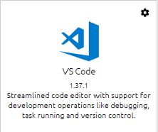
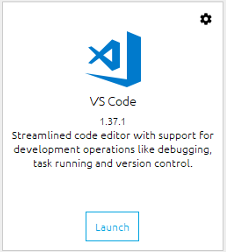
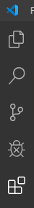
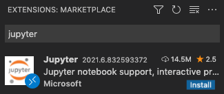
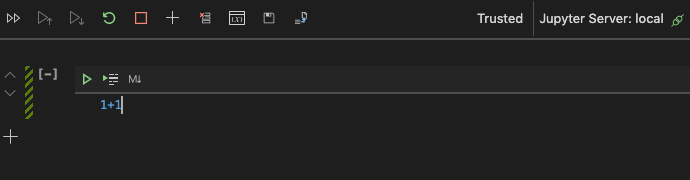
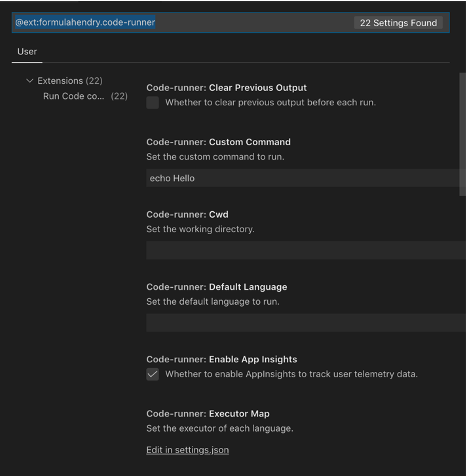
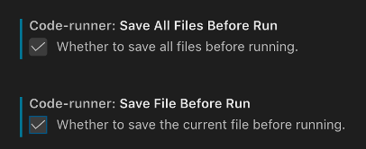
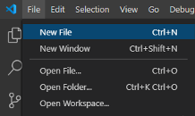
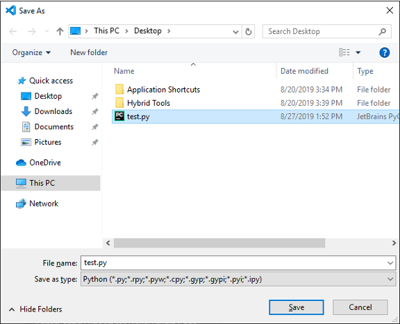

4. VS Code for Python Installation¶
This assumes you have installed Anaconda already.
4.2. Find and Install the VS Code application¶
Scroll down in the list of applications until you find VS Code (Visual Studio Code, by Microsoft).

Click the Install button beneath it.
Once you have installed VS Code, its application icon will change to contain a “Launch” button.

Click that button now to launch VS Code.
4.3. Installing and Configuring Code Runner¶
VS Code is all ready to let you edit Python code, but there’s an Extension to VS Code, called Code Runner, that makes it more convenient to run Python code when testing your work. Let’s install it now.
Click the Extensions button on the left of the VS Code window. It is the bottom button shown below, which looks like four squares:

Then search for the Code Runner Extension as shown below and click its install button. (The install button is green and is just below and to the right of hte large orange “.run” icon.)

The Code Runner Extension in the Extensions list will then have a settings gear icon, as shown below.
Click that gear icon to bring up the settings menu for Code Runner, as shown below.
Choose “Configure Extension Settings,” the bottom item on that menu.
It will bring up a settings window as shown below.
Scroll down until you find the settings for saving files before running, and check both boxes, as shown here.
Your Code Runner Extension is correctly configured. Try it out as shown on the next page.
4.4. Testing your Installation¶
Let’s verify now that you can successfully run Python code.
Create a new file:

Save the file and give it the name test.py to indicate that it is a Python file.

Enter the following small amount of Python code in the new, empty file.
Be sure to press Enter after the code to start a new line!

Save the file again.
Run the file by clicking the small Run icon (which looks like a “Play”
triangle) on the top right of the window. (If you don’t see this button,
check your work above—did you save the file with a .py extension?)
You should see the following output at the bottom of the window,
indicating that your code was run, and produced the output 4 (which is
the result of 2+2, of course).
(The first line means that the “python” command was run on the test.py
file you saved. The final line means the process ended with error code
0, which means no errors, and took 0.102 seconds in total.)
You have a successful Python installation that you can run from Visual Studio!